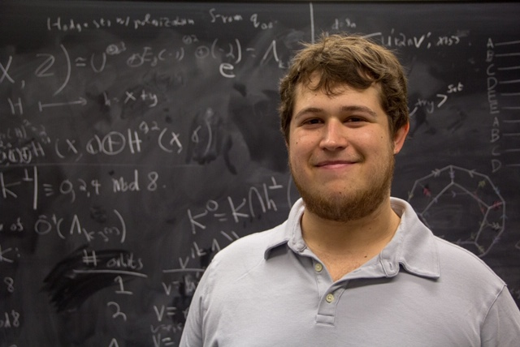

|  |
Contact Information
Office: Lovejoy 108
E-mail: jpetok (at) colby (dot) edu
Mailing address: Department of Mathematics, 4000 Mayflower Hill, Waterville , ME 04901
I am a Visiting Assistant Professor at Colby College in Waterville, Maine. From 2020-2024, I was based at Dartmouth College, working under the supervision of Asher Auel. In Fall 2023, I was a visitor at the Hausdorff Research Institute for Mathematics in Bonn, Germany as a participant in the Junior Trimester Program in Algebraic Geometry. I received my PhD in 2020 under the supervision of Anthony Várilly-Alvarado.
In Fall 2023, I co-organizined the STReTCH seminar in Bonn with Xuqiang Qin.
Research Interests
General interests: Algebraic Geometry, Arithmetic Geometry, Number Theory
Papers
Kodaira dimension of moduli of special K3^[2]-fourfolds of degree 2 (2023, in Journal des Mathématiques Pures et Appliquées). Associated code. Journal version.
A census of cubic fourfolds over F2. (to appear in Mathematics of Computation, with Asher Auel, Avinash Kulkarni, Jonah Weinbaum). Associated code.
On decompositions for Fano schemes of intersections of two quadrics (submitted, with Pieter Belmans, Jishnu Bose, Sarah Frei, Benjamin Gould, James Hotchkiss, Alicia Lamarche, Cristian Rodriguez Avila, Saket Shah).
Zeta functions of K3 categories over finite fields (preprint, with Asher Auel ).
Rational points on modular curves of composite level (preprint, with Catalina Camacho Navarro, Wanlin Li, Jackson Morrow, David Zureick-Brown).
Sections of quadric fourfold bundles over surfaces (with Asher Auel ). In preparation.
Teaching
Math 8 -Calculus of One and Several Variables - Spring 2023 - Dartmouth
Math 3 -Calculus - Winter 2023 - Dartmouth
Math 9 -Multivariable Calculus with Linear Algebra- Fall 2022 - Dartmouth
Math 11 -Accelerated Multivariable Calculus - Fall 2022 - Dartmouth
Math 8 -Calculus of One and Several Variables - Spring 2022 - Dartmouth
Math 81 - Galois Theory - Winter 2022 - Dartmouth
Math 31 - Topics in Algebra - Fall 2021 - Dartmouth
Math 25 - Number Theory - Fall 2021 - Dartmouth
Math 22 - Linear Algebra - Spring 2021 - Dartmouth
Math 8 - Calculus of One and Several Variables - Winter 2021 - Dartmouth
Math 22 - Fall 2020 - Linear Algebra - Dartmouth
Math 8 - Calculus of One and Several Variables - Fall 2020 - Dartmouth
Math 365 - Number Theory - Summer 2020 - Rice
Math 355 - Linear Algebra - Summer 2018 - Rice
Math 211 - Linear Algebra and Differential Equations Fall 2017 - Rice
Old stuff
Some random incomplete notes that some people have occasionally found useful.
Fun stuff Some non-mathematical activities that I enjoy: cooking, singing, hiking, biking, and skiing.
Links